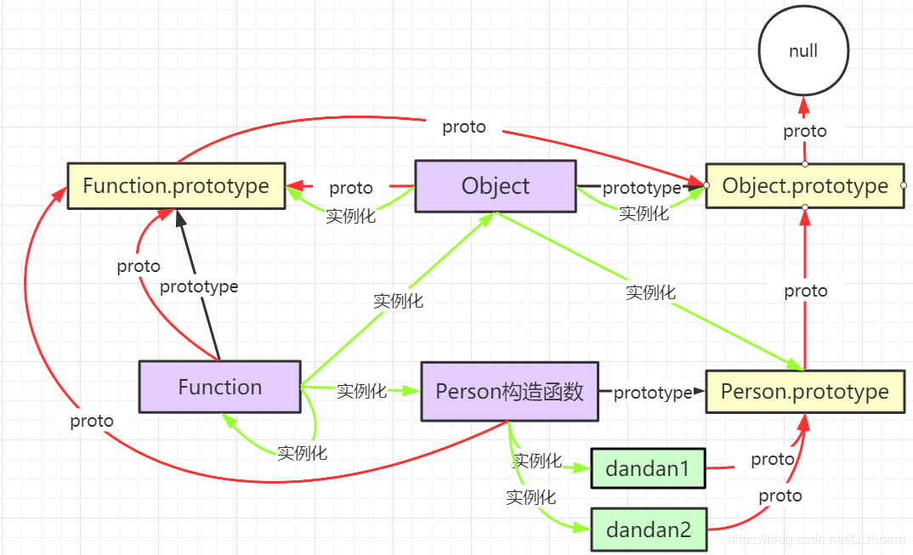

__proto__连在一起，形成的原型链
当对象没有查询到某个属性时，就会顺着原型链去找



new 出来的实例，属性继承的 是 构造函数 的 prototype。
普通实例的原型链方向
实例 --__proto__--> 构造函数的prototype --__proto__--> Object的prototype --__proto__--> null
原型链的终点是null
Warning
注意
区分一下__proto__和prototype
从英文翻译上来说，两者都叫原型，这个从沟通上很容易造成误会
__proto__确切来说是，对象上的[[prototype]]属性，隐式原型
prototype是函数特有的属性，显示原型，原型对象
prototype是函数特有的属性
相关的API
- in
- instanceof
- Object.create
- Object.getPrototypeOf
- Object.setPrototypeOf
- Object.isPrototypeOf
in
如果指定的属性在指定的对象或其原型链中，则 in 运算符返回 true。
prop in object
instanceof
用于检测构造函数的 prototype 属性是否出现在某个实例对象的原型链上。
object instanceof constructor
object 是否在 constructor的原型对象 的 原型链上
Object.create()
静态方法以一个现有对象作为原型，创建一个新对象。
Object.create(proto, [propertiesDescriptor])
proto 作为新创建对象的[[Prototype]]
propertiesDescriptor 可选，作为属性描述符
Object.getPrototypeOf()
静态方法返回指定对象的原型（即内部 [[Prototype]] 属性的值）。
Object.getPrototypeOf(obj)
Object.setPrototypeOf()
静态方法可以将一个指定对象的原型（即内部的 [[Prototype]] 属性）设置为另一个对象或者 null。
Object.setPrototypeOf(obj, prototype)
obj 指定对象
prototype 作为指定对象的[[Prototype]]
Object.isPrototypeOf()
检查对象是否存在于另一个对象的原型链中。
A.prototype.isPrototypeOf(B)
A的prototype是否在B的原型链中